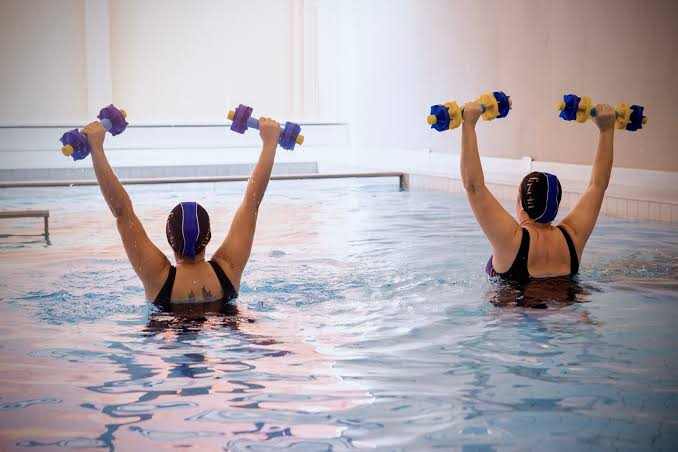
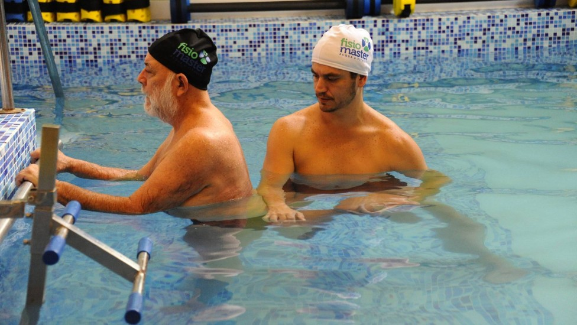

Alívio das dores
Pode auxiliar na redução de dores e desconfortos musculares e articulares.
A hidroterapia é uma modalidade da fisioterapia que utiliza as propriedades da água para auxiliar na recuperação física, no fortalecimento muscular e na melhoria da qualidade de vida.
Por meio de exercícios realizados na água, o paciente pode trabalhar sua mobilidade, equilíbrio e coordenação, respeitando suas necessidades individuais.
Agende sua avaliação
A hidroterapia é um recurso terapêutico que utiliza a água, geralmente aquecida, como ambiente para realização de exercícios fisioterapêuticos. A flutuação e a resistência da água permitem trabalhar diferentes grupos musculares, facilitando determinados movimentos e reduzindo a sobrecarga nas articulações.

Pode auxiliar na redução de dores e desconfortos musculares e articulares.
A resistência da água permite trabalhar a força muscular durante os exercícios.
Auxilia na realização de movimentos e no desenvolvimento da flexibilidade.
Contribui para o treinamento do equilíbrio e da coordenação motora.
A hidroterapia pode ser indicada para diferentes pessoas que necessitam de acompanhamento fisioterapêutico, como:
A indicação depende de uma avaliação individual realizada por um profissional de fisioterapia.
Cada paciente possui necessidades diferentes. Por isso, buscamos oferecer um acompanhamento individualizado para contribuir com sua recuperação e qualidade de vida.
Agendar atendimento Voltar aos tratamentos